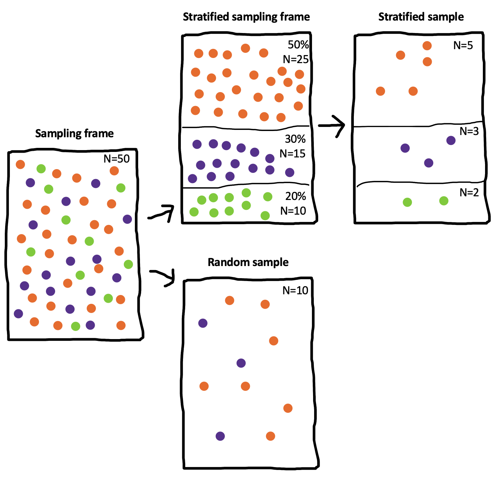

Chapter 10 Sampling
🍎 Learning goals:
- Discuss sampling theory and stratified sampling
- Reason about limitations of different samples, especially convenience samples
- Learn how to choose and justify an appropriate sample size for your experiment
- Consider sampling biases and how they affect your inferences
As we keep reminding you, experiments are designed to yield measurements of a causal effect. But a causal effect of what, and for whom? These are questions that are often given surprisingly little air time in our papers. Titles in our top journals read “Daxy thinking promotes fribbles,” “Doing fonzy improves smoodling,” or “Blicket practice produces more foozles than smonkers.”163 Titles changed to protect the original authors. These researchers might very well have said more specific things in the text of their paper. Each of these uses generic language to state a claim that is implied to be generally true (DeJesus et al., 2019),164 Generic language is a fascinating linguistic phenomenon. When we say things like “mosquitoes transmit malaria,” we don’t mean that all mosquitos do it, only something like “it’s a valid and diagnostic generalization about mosquitoes in contrast to other relevant insects or other creatures that they are spreaders of malaria” (Tessler & Goodman, 2019). but for each of these, we could reasonably ask “doing fonzy improves smoodling for whom?” Is it everyone? Or a particular set of people? And similarly, we might want to ask “how much and what kind of fonzy reading?” These are questions about the generalizability of research.165 Imagine for a second what a non-generic version of one of these titles might look like: “Reading one particular selection of fonzy for fifteen minutes in the lab improved 36 college students’ smoodling scores on a questionnaire.” It seems pretty clear that we wouldn’t let the authors get away with a fully general version of their claim: “Doing [any] fonzy improves smoodling [for anyone].” That’s just a bad generalization.
We’ve already run into generalizability in our treatment of statistical estimation and inference. When we estimated a particular quantity (say, the effect of fonzy), we did so in our own sample. But we then used inferential tools to reason about how this sample’s estimate related to the population as a whole. How do we link up these statistical tools for generalization to the scientific questions we have about the generalizability of our findings? That’s the question of this chapter.
The first key set of decisions in experiment planning is what population to sample from and how to sample. We’ll start by talking about the basics of sampling theory: different ways of sampling and the generalizations they do and don’t license. In this context, we also discuss stimulus sampling, a pervasive and under-appreciated challenge to the generalizability of behavioral research. A second set of key decisions is about sample size planning. We’ll start with classic power analysis but then introduce several other ways that an experimenter can plan and justify their sample size. In the final section, we’ll consider some of the broader issues that come up in sampling, including several sampling biases that can lead to biases in the experimental effect. We’ll end with a discussion of some broader questions about generalizability in behavioral research.
🔬 Case study: Is everyone as bad at describing smells as I am?
Since Darwin, scientists have assumed that smell is a vestigial sense in humans – one that we don’t even bother to encode in language. In English we don’t even have consistent words for odors. We can say something is “stinky,” “fragrant, or maybe”musty,” but beyond these, all our words for smells are about the source of the smell, not the qualities of it. Bananas, roses, and skunks all have distinctive smells, but we don’t have any vocabulary for naming what is common or uncommon about them. And when we make up ad-hoc vocabulary, it’s typically quite inconsistent (Majid & Burenhult, 2014). The same situation applies across many languages.
So, would it be a good generalization about human beings – all people – that olfaction as a sense is de-emphasized relative to vision? This inference has a classic sample-to-population structure. We notice that, within several samples of participants using widely-spoken languages, we observe limited and inconsistent vocabulary for smells, as well as poor discrimination. We use these samples to license an inference to the population – in this case, the entire human population.
 Figure 10.1: Data from Majid and Burenhult (2014) on the consistency of color and odor naming in English and Jahai speakers. Higher values indicate more consistent descriptions. Pie charts indicate the type of language being used.
Figure 10.1: Data from Majid and Burenhult (2014) on the consistency of color and odor naming in English and Jahai speakers. Higher values indicate more consistent descriptions. Pie charts indicate the type of language being used.
But these inferences about the universal lack of olfactory vocabulary are likely based on choosing the wrong sample. Multiple hunter-gatherer groups appear to have large vocabularies for consistent smell description. For example, the Jahai, a hunter-gatherer group on the Malay Peninsula, have a vocabulary that includes at least twelve words for distinct odors, for example /cŋεs/, which names odors with a “stinging smell” like gasoline, smoke, or bat droppings. When Jahai speakers are asked to name odors, they produce shorter and much more consistent descriptions than English speakers – in fact, their smell descriptions were as consistent as their color descriptions (Figure 10.1). Further studies implicate the hunter-gatherer lifestyle as a factor: while several hunter-gatherer groups show good odor naming, nearby horticulturalist groups don’t (Majid & Kruspe, 2018).
Generalizations about humans are tricky. If you want to estimate the average odor naming ability, you could take a random sample of humans and evaluate their odor naming. Most of the individuals in the sample would likely speak English, Mandarin, Hindi, or Spanish. Almost certainly, none of them would speak Jahai, which spoken by only a little more than a thousand people and is listed as Threatened by Ethnologue. Your estimate of low odor naming stability would be a good guess for the majority of the world’s population.
On the other hand, it’s more complicated to jump from a statistical generalization about average ability to a richer claim, like “as humans evolved, they lost olfactory ability and gained visual ability.” Such claims about what humans are like require much more care and much stronger evidence (Piantadosi & Gibson, 2014). From a sampling perspective, human behavior and cognition show immense and complex heterogeneity – variability of individuals and variability across clusters. As a result, naive random samples will have very high variance, leading to problematic generalizations. Put simply, if we want to know what people in general are like, we can’t just choose a bunch of English speakers on a college campus in the United States.
10.1 Sampling theory
The basic idea of sampling is simple: you want to estimate some measurement for a large or infinite population by measuring a sample from that population.166 There are some tools for dealing with estimation in smaller populations where your sample is a substantial fraction of the population (e.g., a survey of your department where you get responses from half of the students). We won’t discuss those here; our focus is on generalizing to large populations of humans. Sampling strategies are split into two categories: probability sampling – in which every member of the population has some chance of being selected – and non-probability sampling – in which there are some members of the population that simply cannot be selected. We’ll begin by discussing probability sampling, then we’ll talk about a useful technique for sampling called stratified sampling.
10.1.1 Classical probability sampling
Classical sampling theory is built around the idea of probability sampling. There is some sampling frame containing every member of the population – think of a giant phone book with every adult human’s name in it. Then we use some kind of sampling strategy, maybe at the simplest just a completely random choice, to select \(N\) humans from that sample frame, and then we collect our measure with them. This scenario is the one that informs all of our statistical results about how sample means converge to the population mean (as in Chapter 6).
Unfortunately, we essentially never do sampling of this sort in psychological research. Gathering random samples from the large populations that we’d like to generalize to is far too difficult and expensive. Consider the problems involved in doing some experiment with a sample of all adult humans, or even adult English-speaking humans who are located in the United States. As soon as you start to think about what it would take to collect a probability sample of this kind of population, the complexities get overwhelming. How will you find their names (what if they aren’t in the phone book)? How will you contact them (what if they don’t have email)? How will they do your experiment (what if they don’t have an up-to-date web browser)? What if they don’t want to participate?
Instead, the vast majority of psychology research has been conducted with convenience samples: non-probability samples that feature individuals who can be recruited easily, like college undergraduates or workers on crowdsourcing platforms like Amazon Mechanical Turk (see Chapter 12). These convenience samples present very different generalization challenges.
10.1.2 Representative samples and stratified sampling
For survey research – think about election polling – there are many sophisticated techniques for dealing with these issues; although this field is still imperfect, it has advanced considerably in trying to predict complex and dynamic behaviors. One of the basic ideas is the construction of representative samples: samples that resemble the population in their representation of one or several sociodemographic characteristics like gender, income, race and ethnicity, age, political orientation. These samples can be constructed by random sampling, but they can also be constructed through non-probability methods like recruiting quotas of individuals from different groups. These methods are critical for much social science research, but they have been used less frequently in experimental psychology research and aren’t necessarily a critical part of the beginning experimentalist’s toolkit.167 Readers can come up with counter-examples of recent studies that focus on representative sampling, but our guess is that they will prove the rule more generally. For example, a recent study tested the generality of growth mindset interventions for US high school students using a national sample (Yeager et al., 2019). This large-scale study sampled more than 100 high schools from a sampling frame of all registered high schools in the US, then randomly assigned students within schools that agreed to participate. They then checked that the schools that agreed to participate were representative of the broader population of schools. This study is great stuff, but we hope you agree that if you find yourself in this kind of situation – planning a multi-investigator 5 year consortium study on a national sample – you might want to consult with a statistician and not use an introductory book like this one.
There is one exception that we think you should know about, however. Imagine you’re interested in a particular measure in a population – say, attitudes towards tea drinking across US adults – but you think that this measure will vary with one or more characteristics such as whether the adults are frequent, infrequent, or non-coffee drinkers. Even worse, your measure might be more variable within one group: perhaps most coffee drinkers feel OK about tea, but non-drinkers either love it (they are tea drinkers) or hate it (they don’t drink any hot beverages). A simple random sample from this population will converge asymptotically to the correct population average for tea-drinking attitudes. But it will do so somewhat more slowly than ideal because any given sample may over- or under-sample non-drinkers just by chance.
Figure 10.2: Illustration of stratified sampling. The left panel shows the sampling frame. The upper frames show the sampling frame stratified by a participant characteristic and a stratified sample. The lower frame shows a simple random sample, which happens to omit one group completely by chance.
Stratified sampling is a very useful trick that makes your effect estimates more precise in cases like this one (Neyman, 1992). If you know the proportion of frequent, infrequent, or non-coffee drinkers in the population, you can sample within those subpopulations to ensure that your sample is representative along this dimension. This situation is pictured in Figure 10.2, which shows how a particular sampling frame can be broken up into groups for stratified sampling (top). The result is a sample that matches the population proportions on a particular characteristic. In contrast, a simple random sample (bottom) can over- or under-sample the subgroups by chance.
 Figure 10.3: Simulation showing the potential benefits of stratification. Each dot is an estimated mean for a sample of a particular size, sampled randomly or with stratification. Red points show the mean and standard deviation of sample estimates.
Figure 10.3: Simulation showing the potential benefits of stratification. Each dot is an estimated mean for a sample of a particular size, sampled randomly or with stratification. Red points show the mean and standard deviation of sample estimates.
Stratified sampling can lead to substantial gains in the precision of your estimate. These gains are most prominent when either the groups differ a lot in their mean or when they differ a lot in their variance.168 There are several important refinements of stratified sampling in case you think these methods are important for your problem. In particular, optimal sampling can help you figure out how to over-sample groups with higher variance. On the other hand, if the characteristic on which you stratify participants doesn’t relate to your measure at all, then stratified sampling converges just as fast as random sampling (though it’s a bit more of a pain to implement). Figure 10.3 shows a simulation of the scenario in Figure 10.2, in which each coffee preference group has a different tea attitude mean, and the smallest group has the biggest variance. Although the numbers here are invented, it’s clear that estimation error is much smaller in the stratified group and estimation error declines much more quickly as samples get larger.
Stratification is everywhere, and it’s useful even in convenience samples. For example, researchers who are interested in development typically stratify their samples across ages (e.g., recruiting equal numbers of two- and three-year-olds for a study of preschoolers). It’s not that you can’t estimate developmental change in a pure random sample; instead, it’s that you are guaranteed good coverage of the range of interest when you stratify. If you have a measure that you think varies with a particular characteristic, it’s not a bad idea to consider stratification. But don’t go overboard – you can drive yourself to distraction finding the last left-handed non-binary coffee drinker to complete your sample. Focus on stratifying when you know the measure varies with the characteristic of interest.
10.2 Convenience samples, generalizability, and the WEIRD problem
Let’s go back to the question of generalizability. How generalizable are the experimental effect estimates that we obtain in our experiments? We’ll start by laying out the worst version of the problem of generalizability in experimental psychology. Maybe we don’t really know anything about any population of interest. We’ll then try to pull back from the brink and discuss some reasons why we might not want to be in despair despite some of the true generalizability issues that plague the psychology literature.
10.2.1 The worst version of the problem
Psychology is the study of the human mind. But from a sampling theory standpoint, not a single estimate in the published literature is based on a sample from the human population. So no estimate can be generalized to the object of study. And the situation is worse than that. Here are three of the most severe issues that have been raised regarding the generalizability of psychology research.
Convenience samples. In the middle of the last section, we dropped a little bombshell: almost all research in experimental psychology is performed with convenience samples. This issue has led to the remark that “the existing science of human behavior is largely the science of the behavior of sophomores” (McNemar, 1946, quoted in Rosenthal & Rosnow, 1984). As we’ll discuss again in Chapter 12, the samples we have easy access to don’t represent the populations we want to describe. There is a twitter account devoted to finding biology papers that make big claims about curing diseases and appending the qualifier “in mice” to them. We might consider whether we need to do the same to psychology papers. Would “Doing fonzy improves smoodling in sophomore college undergraduates in the Western US” make it into a top journal?
The WEIRD problem. Not only are the convenience samples that we study not representative of the local or national contexts in which they are recruited, those local and national contexts are also very far from the broader human experience (see 1. Henrich et al. (2010) coined the term WEIRD (Western, Educated, Industrialized, Rich, and Democratic) to sum up some of the ways that typical participants in psychology experiments differ from the typical human experience. Participants from WEIRD cultures likely think, speak, reason, and perceive differently than those from other backgrounds. The vast over-representation of WEIRD participants in the literature has led some researchers to suggest that published results simply reflect “WEIRD psychology” – a small and idiosyncratic part of a much broader universe of human psychology.169 The term WEIRD has been very useful in drawing attention to the lack of representation of the breadth of human experiences in experimental psychology. But one negative consequence of this idea has been the response that what we need to do as a field is to sample more “non-WEIRD” people. The imposition of a binary distinction – in which every culture outside the WEIRD moniker is the same in some major respect – is unfair and not useful (Syed & Kathawalla, 2020). A better starting point is to consider the way that cultural variation might guide our choices about sampling, as we discuss below.
The item sampling issue. As we discussed in Chapter 7, we’re typically not just trying to generalize to new people, we’re also trying to generalize to new stimuli (Westfall et al., 2015). The problem is that our experiments often use a very small set of stimuli, constructed by experimenters in an ad-hoc way rather than sampled as representatives of a broader population of stimuli that we hope to generalize to with our effect size estimate.170 What’s more, our statistical analyses sometimes fail to take stimulus variation into account (Clark, 1973). Unless we know about the relationship of our stimuli to the broader population, our estimates may be biased in yet another way.
In sum, experiments in the psychology literature primarily measure effects from WEIRD convenience samples of people and unsystematic samples of experimental stimuli. Should we throw up our hands and resign ourselves to an ungeneralizable “science” of sample-specific anecdotes?
10.2.2 Reasons for hope and ways forward
We think the situation isn’t as bleak as the arguments above might have suggested. Underlying each of the arguments above is the notion of heterogeneity in effects, the idea that particular experimental effects vary in the population.
Let’s think through a very simple version of this argument. Let’s say we have an experiment that measures the smoodling effect, and it turns out that smoodling is completely universal and invariant throughout the human population. Now, if we want to get a precise estimate of smoodling, we can take any sample we want because everyone will show the same pattern. Because smoodling is homogeneous, a biased, non-representative sample will not cause problems. It turns out that there are likely tasks like this – for example, the Stroop task. The Stroop task is a bad individual difference measure because it produces a consistent and similar interference effect for many different participants (Hedge et al., 2018).
Figure 10.4: Illustration of the interaction of heterogeneity and convenience samples. Left hand panels show sample composition. Individual plots show the weighted distribution of responses on some measure.

Figure 10.4 illustrates this argument more broadly. If you have a random sample (top), then your sample mean and your population mean will converge to the same value, regardless of whether the effect is homogeneous (right) or heterogeneous (right). That’s the beauty of sampling theory.171 You do get faster convergence if you stratify the sample, though – that’s precisely what our simulation above showed. Tf you have a convenience sample (bottom), one part of the population is over-represented in the sample. The convenience sample doesn’t cause problems if the effect is homogeneous in the population – as with the case of smoodling or Stroop. The trouble comes when you have a heterogeneous effect. Because one group is over-represented, you get systematic bias in the sample mean relative to the population mean.
So the problems listed above – convenience samples, WEIRD samples, and narrow stimulus samples – only cause problems if effects are heterogeneous. Are they? The short answer is, we don’t know. If you’re reading carefully, you’ll notice a problem. Convenience samples are fine in the presence of homogeneous effects, but we only use convenience samples so we may not know which effects are homogeneous!
We can’t do better than this circularity without a theory of what should be variable and what should be consistent between individuals.172 Many people have theorized about the ways that culture and language in general might moderate psychological processes (e.g., Markus & Kitayama, 1991). What we’re talking about is related but slightly different – a theory not of what’s different, but of when there should be any difference and when there shouldn’t be. As naive observers of human behavior, differences between people often loom large. We are keen observers of social characteristics like age, gender, race, class, and education. For this reason, our first theories of psychology often foreground these characteristics as the primary locus for variation between people. Certainly these characteristics are important, but they fail to explain many of the invariances of human psychology as well. An alternative line of theorizing starts with the idea that “lower-level” parts of psychology – like perception – should be less variable than “higher-level” faculties like social cognition. This kind of theory sounds like a useful place to start, but there are also plenty of counter-examples in the literature (Henrich et al., 2010).
One positive direction for the future is the rise of multi-lab, multi-nation studies. For example, ManyLabs 2 systematically investigated replicability of a set of phenomena across cultures (O. Klein et al., 2018), finding limited variation in effects between WEIRD sites and other sites. And in a study comparing a set of convenience and probability samples, Coppock et al. (2018) found limited demographic heterogeneity in a sample of experimental effects from across the social sciences. Large-scale studies like these offer the possibility of measuring and systematically characterizing demographic and cultural variation – as well as how variation itself varies between phenomena!
10.2.3 Reasoning about sampling bias
In fields like econometrics or epidemiology that use observational methods to estimate causal effects, reasoning about sampling biases is a critical part of estimating generalizable effects. That’s because the measure that these fields are interested in – for example, outcomes to do with health and wealth – vary widely across individuals. So if you assess some association, say between tea consumption and cardiovascular disease, you need to think very carefully about how your sampling process interacts with this causal structure.
Imagine you want to measure the association between wealth and happiness through a survey. As we discussed in Chapter 1, there are plenty of confounds that we can come up with: factors that might make you both wealthier and happier. We can also create other sorts of problems if we are careless in our sampling. One prominent problem that we can induce is called collider bias.
 Figure 10.5: Four reasons why money and happiness can be correlated in a particular sample: 1. causal relationship, 2. reverse causality, 3. confounding with friendship, and 4. collider bias in your sample.
Figure 10.5: Four reasons why money and happiness can be correlated in a particular sample: 1. causal relationship, 2. reverse causality, 3. confounding with friendship, and 4. collider bias in your sample.
Suppose we recruited our sample from the clients of a social services agency. Unfortunately, both of our variables might have a causal relationship with presence in a social service agency (Figure 10.5: people might be interacting with the agency for financial or benefits assistance, or else for psychological services (perhaps due to depression). In this sample, we might see a negative association between wealth and happiness – on average the people coming for financial assistance would have less wealth and more happiness than the people coming for psychological services – instead of the positive but confounded association we talked about in Chapter 1. The take-home here is that if there is a causal relationship between your variables of interest and presence in your sample, you have collider bias.
10.3 Sample size planning
Now that you have spent some time considering your sample and what population it represents, how many people will your sample contain? As we learned in Chapter 3, continuing to collect data until you observe a \(p < .05\) in an inferential test is a good way to get a false positive. To avoid this situation, you need some kind of plan for when you will stop collecting data! Your stopping rule can then be a key part of your preregistration, so as to be transparent that your choice of stopping rule didn’t invalidate your statistical inference (see Chapter 11).
The simplest stopping rule is “I’ll collect data until I get to a target \(N\)” – all that’s needed in this case is a value for \(N\). Classically, this value was computed using power analysis, which can provide a value for which you have a good chance of rejecting the null hypothesis given a particular expected effect size. But standard power analysis relies on knowing what size effect you are expecting, which is often an unrealistic assumption. If we knew what size effect we expected, wouldn’t we already have the information that we are conducting the experiment to get?
Table 10.1: Example classes of experimental stopping rules.
| Method | Stopping Rule | Example | |
|---|---|---|---|
| 1 | Power analysis | Stop at N for known probability of rejecting the null given known effect size | Randomized trial with strong expectations about effect size |
| 2 | Smallest effect size of interest | Stop at N for known probability of rejecting the null for effects greater than some minimum | Measurement of unknown but important effect |
| 3 | Resource constraint | Stop collecting data after a certain amount of time or after a certain amount of resources are used | Time-limited field work |
| 4 | Precision analysis | Stop at N that provides some known degree of precision in measure | Experimental measurement to compare with predictions of cognitive models |
| 5 | Sequential analysis | Stop when a known inferential criterion is reached | Intervention trial designed to accept or reject null with maximal efficiency |
There are many different stopping rules that can be used to justify a sample size (Table @ref(tab:sampling-stopping rules)). Each of these can provide a valid justification for a particular sample size, but they are most useful in different situations. We’ll first introduce classic power analysis both because it is a common standard and because it illustrates some of the concepts used in others (e.g., smallest effect size of interest or SESOI analysis). We’ll then discuss alternative approaches.
10.3.1 Classic power analysis
 Figure 10.6: Standard decision matrix for NHST.
Figure 10.6: Standard decision matrix for NHST.
Let’s start by reviewing the null-hypothesis significance testing paradigm that we introduced in Chapter 6. Recall that we introduced a decision-theoretic view of testing in Section 6.3.3, shown again in Figure 10.6. The idea was that we’ve got some null hypothesis \(H_0\) and some alternative \(H_1\) – something like “no effect” and “yes, there is some effect with known size”– and we want to use data to decide which state we’re in. \(\alpha\) is our criterion for rejecting the null. \(\beta\)
10.3.2 Alternative approaches to sample size planning
- Smallest effect size of interest (SESOI analysis)
- Precision-based sample size planning (Bland 2009; Lash and Kaufman 2015) (malcolmbarrett.shinyapps.io/precisely)
- Simulation based
- Sequential analysis (Schönbrodt et al. 2017)
sample calculations for within/between subjects http://daniellakens.blogspot.com/2016/11/why-within-subject-designs-require-less.html https://www.ncbi.nlm.nih.gov/pmc/articles/PMC6640316/
10.3.3 Sample sizes for replication studies
Setting the sample size for a replication study has been a persistent issue in the meta-science literature. Naively speaking, it seems like you should be able to compute the effect size for the original study and then simply use that as the basis for a classical power analysis. This approach has several flaws, however. First, the effect size from the original published paper is likely an overestimate of the true effect size due to publication bias (Brian A. Nosek et al., 2021).173 Imagine the counterfactual world in which the same study had yielded a smaller and perhaps non-significant effect size. Would it still have been published in the same form, and would you still want to replicate? If not, then consider the fact that the authors “got lucky” – even if the effect is truly present, perhaps this particular experiment happened to observe a larer effect than the true value just by chance. Second, the power analysis will only yield the sample size at which the replication will have a particular chance of rejecting the null at some criterion. But it’s quite possible that the original experiment could be \(p<.05\), the replication could be \(p>.05\), and yet they could not differ from one another. So a statistically significant replication of the original effect size is not necessarily what you want to aim for.
Faced with these issues, a replication sample size can be planned in several other ways. First, replicators can use standard strategies above such as SESOI or resource-based planning to rule out large effects with high probability or to spend a known amount of time or money. The issue is that these strategies can produce an unsatisfying result if the SESOI is high or limited resources are allocated; a conclusive answer can require a very substantial commitment of resources.
Second, Simonsohn (2015) recommends the “small telescopes” approach. The idea is not to test whether there is an effect, but rather where there is an effect large enough that the original study could have detected it. The analogy is to astronomy. If a birdwatcher points their binoculars at the sky and claims to have discovered a new planet, we want to ask not just whether there is a planet at that location, but also whether there is any possibility that they could have seen it using that device – if not, perhaps they are right but for the wrong reasons! Simonsohn shows that, if a replicator collects 2.5 times as large a sample as the original, they have 80% power to detect any effect that was reasonably detectable by the original. This simple rule of thumb provides one good starting place for conservative replication studies.
Finally, replicators can make use of sequential Bayesian analysis, in which they attempt to gather substantial evidence relative to the support for \(H_1\) or \(H_0\). This is an appealing option because it allows for efficient collection of data that reflects whether an effect is likely to be present in a particular sample, especially in the face of the sometimes prohibitively large samples necessary for SESOI or “small telescopes” analyses.
10.4 Summary: Sampling
Your goal as an experimenter is to estimate a causal effect. But the effect for whom? This chapter has tried to help you think about how you generalize from your experimental sample to some target population. It’s very rare for you to be conducting an experiment based on a probability sample in which every member of the population. In the case that you are using a convenience sample, you will need to consider how bias introduced by the sample could relate to the effect estimate you observed. Do you think this effect is likely to be very heterogeneous in the population? Are there theories that suggest that it might be larger or smaller for the convenience sample you recruited?
Questions about generalizability and sampling depend on the precise construct you are studying, and there is no mechanistic procedure for answering them. Instead, you simply have to ask yourself: how does my sampling procedure qualify the inference I want to make based on my data? Being transparent about your reasoning can be very helpful – both to you and to readers of your work who want to contextualize the generality of your findings.
Exercise 10.1 Form an argument about this controversial position: We want to understand human cognition generally, but it’s a more efficient research strategy to start by studying certain features of cognition (perception, for example) in WEIRD convenience populations and then later check our generalizations in non-WEIRD groups.
Exercise 10.2 Form an argument about this controversial position: The most influential experiments aren’t generalizations of some number to a population, they are demonstration experiments that show that some particular effect is possible under some circumstances (think Milgram’s conformity studies, where people apparently shocked a confederate at an experimenter’s prompting), so often specific population sampling is secondary.
Exercise 10.3 Form an argument about this controversial position: Nothing you learn from US college undergraduates is likely to generalize to the US population as a whole, so we should dramatically decrease the use of this convenience population.
Exercise 10.4 Form an argument about this controversial position: We can’t ever make generalizations about the human mind because so much of the historical human population is simply inaccessible to us (we can’t do experiments on ancient Greek psychology). Psychological samples are also sampling a particular moment in time.
📚 Suggested readings:
Henrich, J., Heine, S. J., & Norenzayan, A. (2010). The WEIRDest people in the world? Behavioral and Brain Sciences, 33(2-3), 61-83.